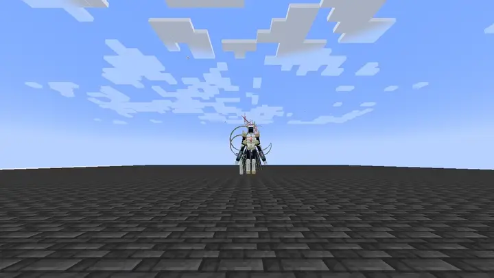
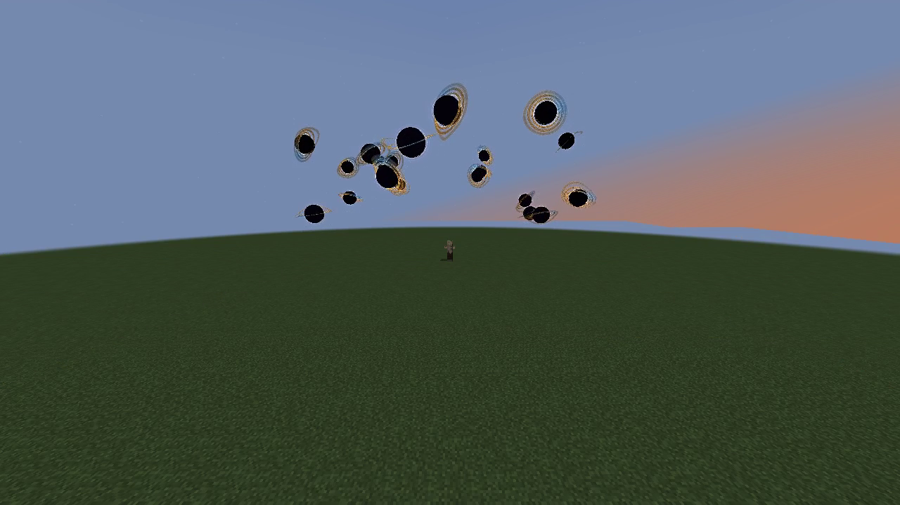
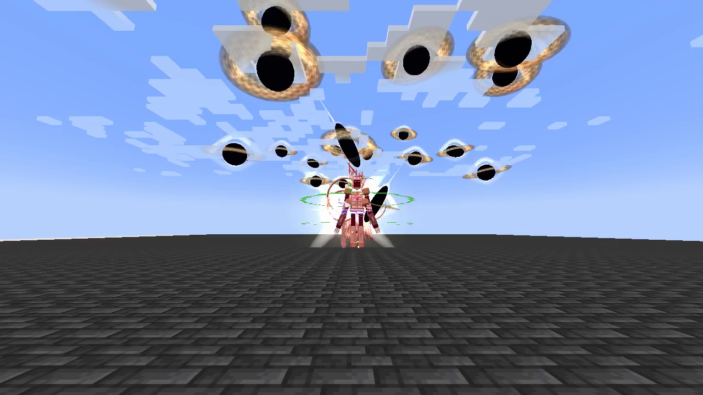
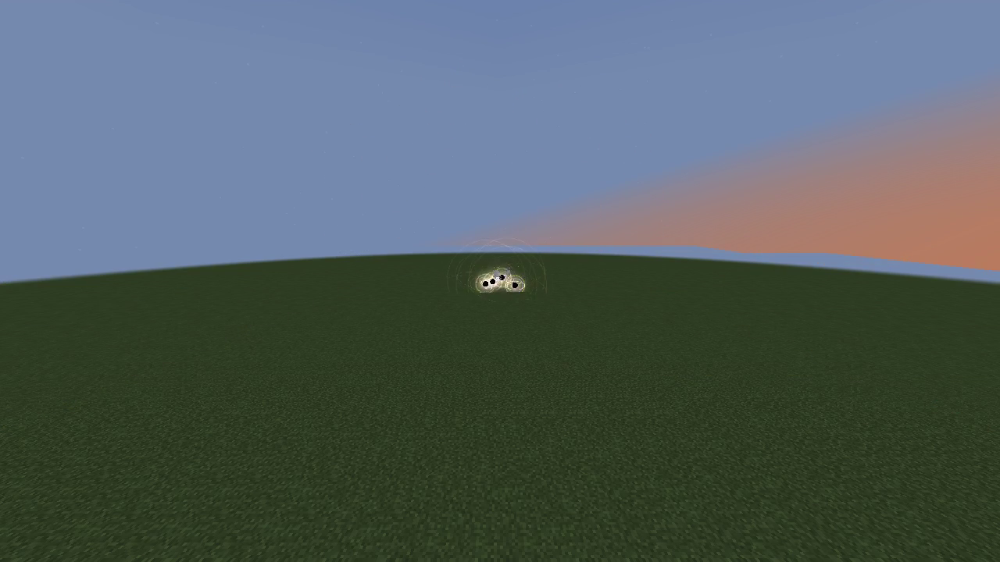

Aion, God of Causality is a Godly skill built around spatial precision, battlefield control and a personal HP/SHP/energy rewind with a safe recorded position. Its active arts use magicules and space elemental damage. Its power grows with mastery, without EP damage scaling.
Contents
Usage
Passive
[Passive - Toggle] — Unbroken Continuum
| Ability information | Value |
|---|---|
| Damage type | None — defense / slowing |
| Damage ID | — |
Adds 45 physical barrier, 45 magic barrier, 0.75 knockback resistance and 1,200 native Multilayer Barrier capacity. The latter uses Tensura’s existing barrier HUD. Its owned multilayer contribution rearms after 10 seconds without an incoming hit, checked on the next upkeep tick. Upkeep does not repair it during combat. Turning the passive off removes its own contributions while preserving other barrier modifiers.
Enabling costs the first 180 magicules, then 180 magicules each second. It turns off when unfunded or suppressed. It emits no constant passive particle cloud.
Aion ownership also grants the three always-active Godly classification passives: Divine Authority, Absolute Penetration and Interference Immunity. These are independent of Unbroken Continuum's toggle and upkeep. Resistance bypass belongs to the owner's damage; the slowing aura never suppresses nearby targets' defenses against other sources.
Eligible enemies within 16 blocks suffer causal time dilation. Movement reduction increases linearly from 15% at the edge toward 80% at the caster. It uses a temporary movement modifier, has no ambient particle cloud, does not stack between Aion users and expires within half a second after leaving the aura or the caster stopping it. Hostile and unowned projectiles are also slowed by proximity, using the same 15–80% reduction. Their speed is adjusted rather than repeatedly multiplied toward zero, and the aura’s speed reduction is removed after leaving. Own and allied shots are preserved. Native projectile collision, gravity and drag continue to operate.
Active
| Mode | Magicule cost | Cooldown | Range / area | Base damage |
|---|---|---|---|---|
| Worldline Sever | 2,400 to start; 1,200 per additional 0.5 seconds | 4 seconds after channel ends | 80-block beam, up to 8 targets per pulse, 6-second maximum | 1,200 per 0.5 seconds |
| Event Horizon | 10,000 | 16 seconds | 64-block cursor placement; 24-block pull, 10-block damage radius; 10 seconds | 700 per second |
| Causal Reversal | 12,000 to record; free return | 1 second to recast; 25 seconds after manual or automatic return | Personal checkpoint, 20-second window | — |
| Genesis Verdict | 28,000 | 45 seconds | 64-block mob/player acquisition; 20 blasts, 3.75 / 4.5-block radius each | 480 / 600 per hole; 9,600 / 12,000 total |
Worldline Sever
[Active - Mode 1] — Worldline Sever
| Ability information | Value |
|---|---|
| Damage type | Space elemental |
| Damage ID | tensura:space_elemental |
Hold the assigned skill key to channel a gold-white spatial beam that follows the current crosshair direction. Both the local preview and server damage ray use a short, frame-independent steering response, giving sweeping turns a smooth transition instead of snapping immediately. The local visual still updates every rendered frame; damage and resource use remain server-controlled. It pierces up to eight eligible enemies per pulse, passes through water and lava, and stops at solid block collision shapes (including solid waterlogged blocks). Damage pulses every half second; the opening pulse costs 2,400 magicules and each additional pulse costs 1,200. A full six-second channel has twelve pulses and costs 15,600 magicules before native cost modifiers.
Releasing the key, exhausting magicules, suppression, death, dimension changes or reaching six seconds ends the beam and starts its four-second cooldown. The channel cannot keep damaging after release. Each pulse rechecks friendly/PvP protection.
Event Horizon
[Active - Mode 2] — Event Horizon
| Ability information | Value |
|---|---|
| Damage type | Space elemental |
| Damage ID | tensura:space_elemental |
Place a gravity domain with a dark core, counter-rotating accretion bands and Tensura’s native Gravity magic circle. Enemies within 24 blocks are pulled toward the core; only enemies within the 10-block inner radius take space damage each second. A faint outer ring marks the pull range, while the bright inner circle marks the damage zone. Its inward pull adds 0.40 horizontal velocity per tick before knockback resistance, which reduces the pull. Hostile or unowned projectiles lose 35% velocity per tick and curve toward the center; the caster’s own and allied projectiles are preserved.
Causal Reversal
[Active - Mode 3] — Causal Reversal
| Ability information | Value |
|---|---|
| Damage type | None — recovery / repositioning |
| Damage ID | — |
The first press costs 12,000 magicules and places a visible clockwork checkpoint, recording position, HP, SHP, aura and magicules after paying that initial cast cost. Press again after the one-second recast delay to return for no cost, even with no magicules remaining. If not used manually, it automatically returns after twenty seconds. HP, SHP, aura and magicules only increase toward their recorded values, limited by current caps. If a current stat is already higher than its checkpoint value, that higher value is preserved. The checkpoint stays fixed; it does not continually record new peaks. The initial cast cost is never refunded. Native Recovery circle effects and spatial bursts mark the return.
Reversal does not restore items, cooldowns, buffs or lost lives. The destination must remain unobstructed, inside the world border and in the same dimension. A blocked manual return keeps the pending checkpoint. If the destination is blocked at timeout, recovery happens in place instead of teleporting into a wall. A completed manual or automatic return consumes the checkpoint and starts the full twenty-five-second cooldown. An already-armed checkpoint still resolves while asleep or temporarily suppressed. Death, forgetting Aion, relogging and dimension changes clear it without restoring resources.
Genesis Verdict
[Active - Mode 4] — Genesis Verdict
| Ability information | Value |
|---|---|
| Damage type | Space elemental |
| Damage ID | tensura:space_elemental |
Summon twenty miniature black holes at scattered airborne positions around the mob or player under your crosshair, within 64 blocks. A valid, visible enemy is required. Aiming at empty space, terrain or an ineligible target spends no magicules, cooldown or mastery and does not consume Event Horizon.
The holes appear in a staggered formation, hover briefly, then accelerate inward along twenty different curved paths. Each flight lasts 0.5–0.75 seconds. Impacts begin 1.6 seconds after casting, arrive individually every 0.1 seconds, and finish at 3.5 seconds.
Every black hole deals its own damage: 480 base space damage to up to eight eligible mobs/players within 3.75 blocks of its individual detonation. Each collision uses an independent native hit, so ordinary hurt cooldown does not swallow successive holes. This exception belongs only to Verdict’s collision sources; other attacks keep their usual cooldown rules. An enemy caught in all twenty explosions receives 9,600 raw damage before mastery and native handling.
Every airborne hole continuously homes toward the target’s current position, including during its final approach. There is no pre-impact aim lock or distance tether around the original formation. Each completed explosion stays at its actual collision point while the remaining holes continue following. If the target dies, becomes ineligible or leaves the loaded dimension, the remaining holes converge at the last tracked location; the barrage never loads chunks or follows between dimensions. Damage still checks each recipient’s current eligibility.
If your Event Horizon is active, Verdict consumes it and empowers every hole to 600 damage with a 4.5-block damage radius, for 12,000 raw damage when all twenty explosions overlap. A mob or player target is still required. The Horizon’s previous visual and circle disappear.
Black cores stretch with flight speed. Broad, striated accretion disks retain their own stable world orientation; lensed upper and lower arcs and thin photon rings frame the dark silhouettes. At collision, short starbursts ignite into large pressure fronts, tilted shock rings and arcing luminous ejecta. The cinematic pressure fronts expand to roughly 10 blocks (12 empowered); their outer light is visual and does not enlarge the damage radius. Reduced particle settings preserve all twenty holes, their disks and primary shock fronts while reducing decorative fragments.
The visual tail ends roughly 5.2 seconds after casting. Death of the caster, suppression, forgetting Aion, relogging and dimension changes cancel the pending barrage. Terrain is not destroyed and native friendly/PvP protection is checked again for every collision.
Damage and interaction
The damage multiplier is 1 + 0.5 × mastery fraction, capped at 1.5×. All damaging modes use native tensura:space_elemental damage and use native damage calculation. The shared Godly traits provide source-specific resistance/nullification bypass and +35% damage against non-Godly owners, even with Unbroken Continuum off. Other defenses, authority and PvP rules still apply. Team and owner protection follows the addon’s existing target checks. No mode destroys blocks or scales damage with EP.
Obtaining
Use Skills → Godly → Ascension to replace one mastered Myths Ultimate after reaching the awakening and EP requirements. Equip Aion from the new Godly category in Tensura’s normal ability menu.
Visual effects
Worldline Sever tears a dark spatial seam with saturated gold/violet edges, a narrow white core and travelling time fragments. Event Horizon folds six dark petals toward its lensed center above substantial clock hands, with a faint separate pull perimeter. Causal Reversal places a three-dimensional hourglass over its checkpoint clock and releases a sharp re-entry burst on return. Genesis Verdict suspends twenty black holes, draws them through curved trails and resolves them in layered spatial explosions.

Watch the native Eschaton/Aion motion preview. The edited reel includes all four active Aion modes; the waiting interval before the automatic checkpoint return is omitted.


